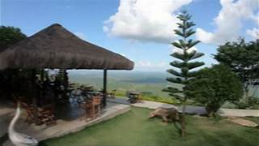

Mirante do Canto:
Um dos cartões-postais da cidade, o Mirante do Canto proporciona uma vista panorâmica de tirar o fôlego da região. É um local ideal para apreciar o pôr do sol e tirar fotos inesquecíveis.
Martins, conhecida como a "Princesa Serrana do Rio Grande do Norte", é um dos principais destinos turísticos do estado. A combinação de clima agradável, paisagens deslumbrantes e atrativos culturais faz da cidade um lugar imperdível para quem visita o Rio Grande do Norte.
Um dos cartões-postais da cidade, o Mirante do Canto proporciona uma vista panorâmica de tirar o fôlego da região. É um local ideal para apreciar o pôr do sol e tirar fotos inesquecíveis.
Fundado em 1955, o museu funciona no edifício "PAX", de 1871, e conta com acervos de Arte Sacra, móveis antigos, biblioteca jurídica e fotos de figuras ilustres. No setor de Arqueologia, estão peças líticas e ossadas humanas da Casa de Pedra, comprovando a presença de caçadores nômades.
Esta caverna natural é uma das maiores do estado, com formações geológicas impressionantes. A Casa de Pedra é um ponto turístico famoso, cercado por lendas e histórias que encantam os visitantes.
Um lugar calmo e de grande beleza natural, perfeito para momentos de descanso e contemplação. É também um ponto de encontro para quem gosta de piqueniques e caminhadas.
Localizado em uma das áreas mais altas da cidade, o Mirante do Carranca é famoso por suas formações rochosas e vistas espetaculares. É um ótimo ponto para apreciar o clima serrano e a beleza da vegetação local.
Realizado anualmente, o festival é uma das atrações mais aguardadas da cidade. Durante o evento, Martins se transforma em um centro de alta gastronomia, com pratos que valorizam os ingredientes locais e chefs renomados.